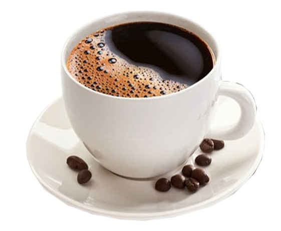
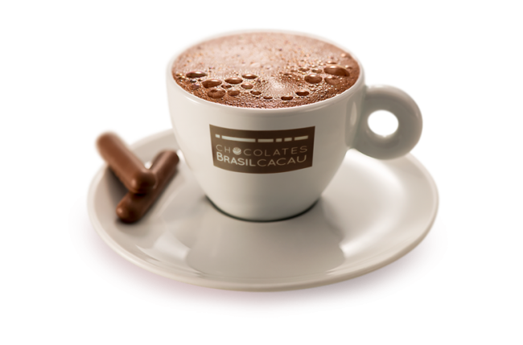
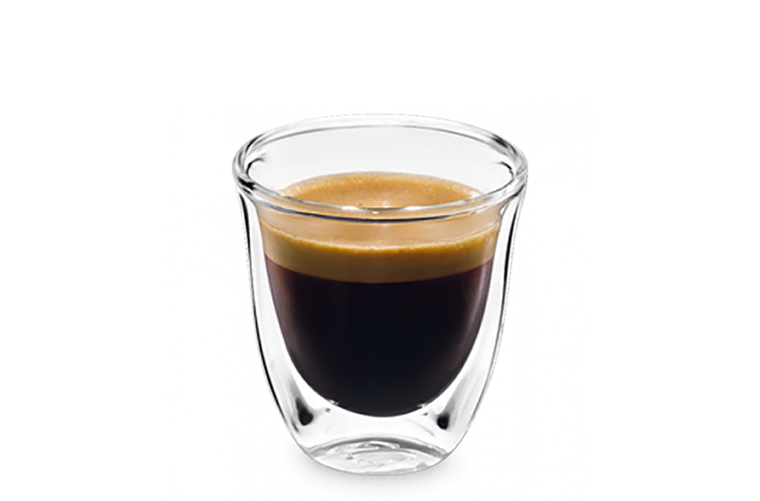
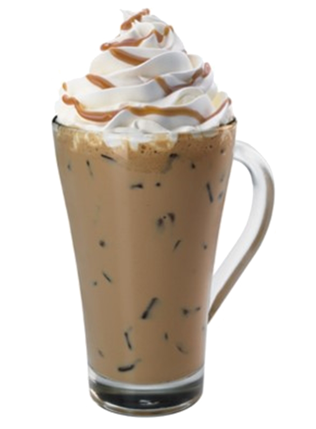
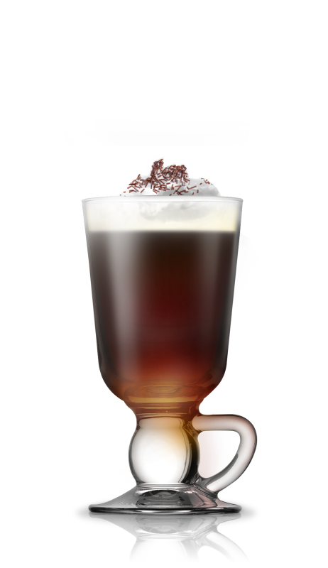

Espresso
The espresso, also known as a short black, is approximately 1 oz. of highly concentrated coffee. Although simple in appearance, it can be difficult to master.
Latte
Cafe lattes are considered an introductory coffee drink since the acidity and bitterness of coffee is cut by the amount of milk in the beverage. Flavoring syrups are often added to the latte for those who enjoy sweeter drinks.

Capuccinno
This creamy coffee drink is usually consumed at breakfast time in Italy and is loved in the United States as well. It is usually associated with indulgence and comfort because of its thick foam layer and additional flavorings that can be added to it.

Mocha
The mocha is considered a coffee and hot chocolate hybrid. The chocolate powder or syrup gives it a rich and creamy flavor and cuts the acidity of the espresso.
Macchiato
The word “macchiato” means mark or stain. This is in reference to the mark that steamed milk leaves on the surface of the espresso as it is dashed into the drink. Flavoring syrups are often added to the drink according to customer preference.
Affogato
Affogatos are more for a dessert coffee than a drink you would find at a cafe, but they can add a fun twist to your menu. They are made by pouring a shot of espresso over a scoop of vanilla ice cream to create a sweet after-meal treat.

Americano
Americanos are popular breakfast drinks and thought to have originated during World War II. Soldiers would add water to their coffee to extend their rations farther. The water dilutes the espresso while still maintaining a high level of caffeine.

Frappe
Frappe is just a sweet iced coffee blended with milk and espresso, and it makes for the perfect, summer favorite coffee house treat. It is a MUST have coffee drink if you're hanging out at the pool, beach, or even your backyard.
Irish
Irish coffee is a cocktail consisting of hot coffee, Irish whiskey, and sugar, stirred, and topped with cream.
